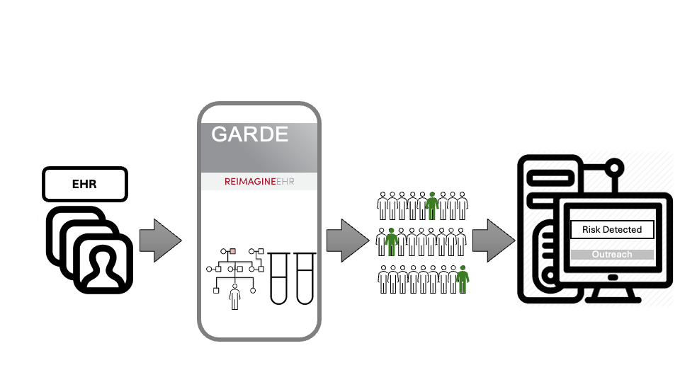
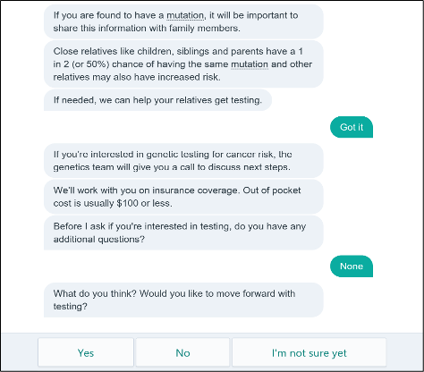

Chapter 1 What is GARDE?
GARDE is an open-source digital health software platform and chatbot creation tool, funded by several grants from the National Cancer Institute. GARDE enables population-level risk assessment for health conditions that can be combined with chatbot-based outreach and education.
GARDE has two components:
- population-level risk assessment algorithms that analyze patient data in the electronic health record (EHR) to identify patients who meet criteria for health services (Figure 1); and

Figure 1. GARDE workflow.
- a chatbot authoring platform (GARDE-Chat) that allows researchers and their teams to create healthcare chatbots for patient outreach, education, and access to appropriate health services (Figure 2).

Figure 2. Chatbot example.
GARDE algorithms and GARDE-Chat chatbots are EHR and healthcare system-agnostic. They can be used in various clinical settings. GARDE algorithms have been deployed across 6 academic medical centers. Over 20 studies use GARDE-Chat across various clinical domains and settings, from pilot trials to large pragmatic clinical trials. GARDE algorithms and GARDE-Chat chatbots can be shared and adapted across research projects and institutions. GARDE algorithms and GARDE-Chat chatbots can be used independently or in combination depending on the study design and implementation approach.